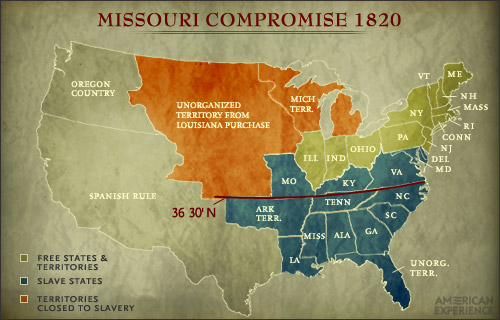
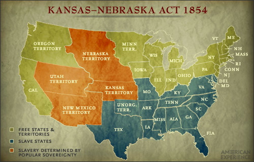
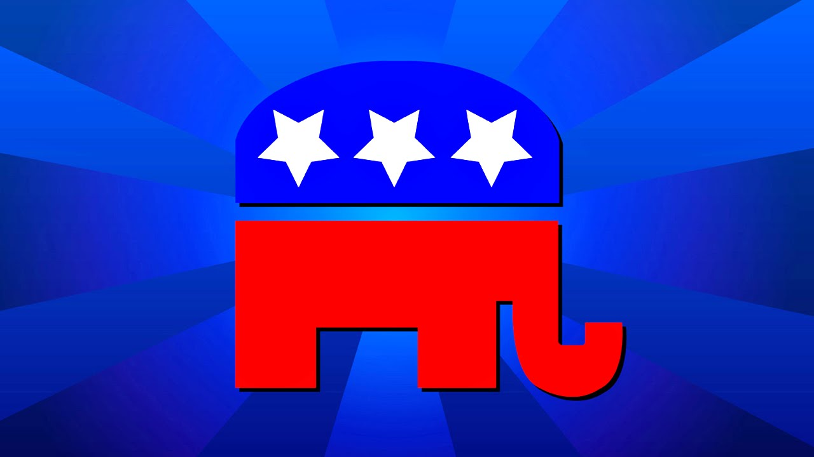
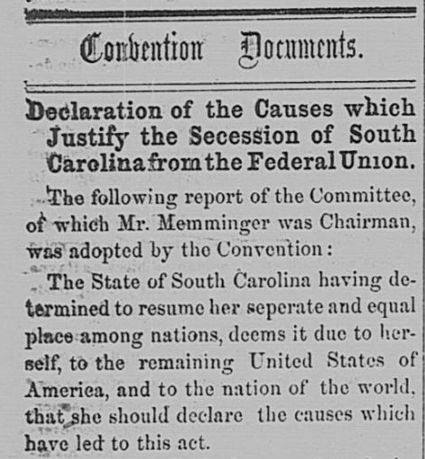

Where Does It Fall in?
In this case, you should know about what the Caning of Charles Sumner is, and the main events of what it is. Now, you will learn about how it exactly relates to other parts in US History. This is possible since in the end, history is a series of chain events that affect each other. That would mean the Caning of Charles Sumner was enacted due to previous events, and in fact, the Caning of Charles Sumner had resulted in changing in the future too. Let us go in order, such that the timeline is easier to follow and understand. (I might add some other events in if it relates to what Charles Sumner also did too.)
Missouri Compromise of 1820
The Missouri Compromise of 1820, in short, was an agreeing deal between the North and the South. It allowed for small peace between the two sides, where there was a line that divided the Union from the Confederates. Anything above the line of latitude 36°30′ would be excluded from slavery, and that would be the Union's side. Anything below the line of latitude 36°30′ would have slavery, and it would be in the area where the Confederates would be. The reason why this is of high importance is since for almost 30 years, there would be no problem with territory since they have dedicated a line to already mark the territories. Later on, Kansas and Nebraska would break this rule, and as a result, people would be be upset since Kansas wants to be a slave state even though it is on the North Side. From this people would need to discuss whether it is a good idea to allow Kansas to be a slave state. When this happens, Charles Sumner would have a say in deciding that fate too. And therefore, he would write his "Crime Against Kansas" speech that would also be directed against Stephen Douglas and Andrew Butler. From that point on, you probably know how the rest of the event goes.

Kansas-Nebraska Act
The Kansas-Nebraska Act was a law enacted in May 30, 1854 that would negate the Missouri Compromise of 1820. It divided the United States since the South was happy with this act while the Kansas-Nebraska Act was not liked in the North. From this, Charles Sumner was going to have a say against this from Kansas being a slave state. But apart from just the Missouri Compromise of 1820, the Kansas-Nebraska Act made it clear that from voting, not location, would a state be able to choose which side it wants to be on. And thus, a simple problem becaome a head on debate. But in addition, it was effective in putting the issue of slavery as a point of interest yet again. Slavery was increasing in a number of territories, and it was time to stop.

Birth of the Republican Party
The Birth of the Republican Party was the start of a new party when the Kansas-Nebraska Act was enacted in 1854. When this happens, many people were worried about the expansion of slavery. As a result, in the same year of 1854, the Whigs, Democrats, Free-Soilers, and the abolitionists became a coalition of the Republican Party. This party was popular in the North, and soon later... it threatened the South to threaten the North to say that they are seceding from the Union. The Republican Party became a real party, and it had primary objectives to accomplish. Specifically, one of those objectives was to stop the spread of slavery, and thus, that was the sole reason of why Charles Sumner joined the Republicans. From that point on, what ever Charles Sumner said was for the Republicans, and more importantly, his presence was a benefit to the Republican Party since his words were often liked and loved by everyone.

Caning of Charles Sumner
Yes, this is our event!!! We already discussed this event, so we do not need to discuss the idea of this occuring. This is just a placeholder so you, the viewer, can see where this event comes in play. So, nothing HERE! Let's move on!
South Carolina: Start of Seceding
When the Republican Party was formed, it was made to stop the idea of slavery from spreading in other territories. As you know, the Republican Party gained popularity, and at somepoint, John C. Freemont secured their position as a great, dominating Republican Party. Thanks To Charles Sumner, and a few other worthy people, the Republican Party was also becoming a threat as well. That being said, it threated South Carolina to threaten the rest of the Union being said that they would secede if the Republican Party grew bigger. Since this was the case, South Carolina seceded as a result from the Republican Party growing bigger due to the contribution of Charles Sumner making the Republican Party a little better and more liked.
